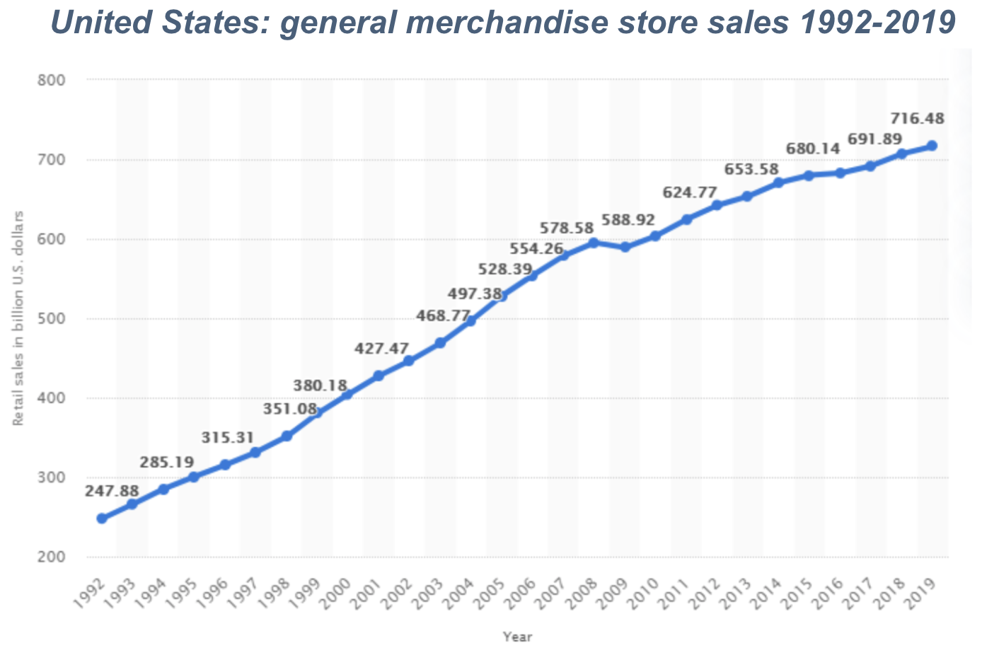

Market Overview
Experienced healthy growth in the last 20 years growing from $248B in 1992 to $717B in 2019. (Statista, 2021)
BY THE NUMBERS
(in the US as of 2020)
- 7,676 retailers
- 42,321 locations
- Employed nearly one in five Americans (Kentley Insights, 2021)
Growing E-commerce Revenues
- Most support a hybrid model of brick-and-mortar stores as well as an e-commerce site allowing consumers
to shop in many
combinations of online and in person
-
As 2020, online sales typically account for 14% of total sales (US Census, 2021)
